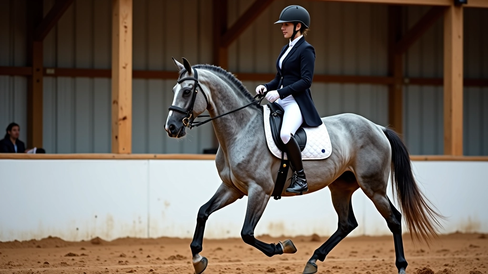
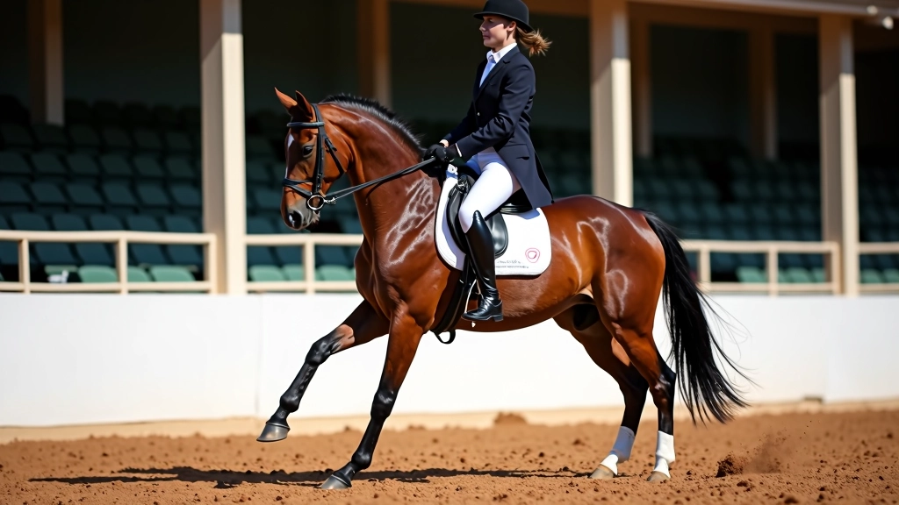
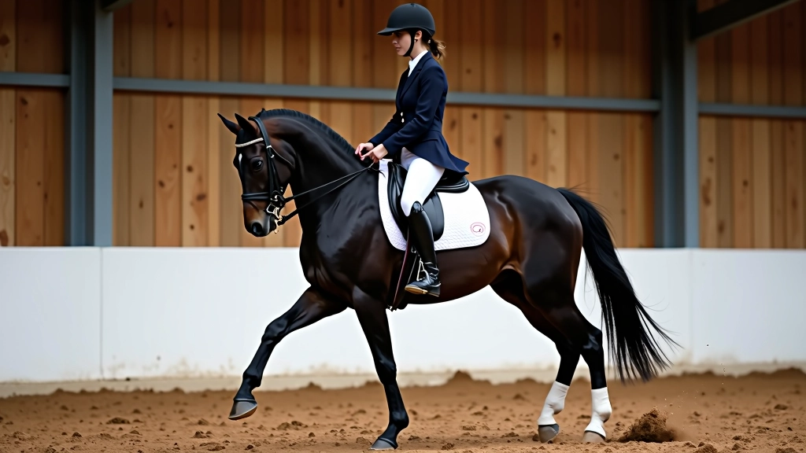

تمارين متقدمة: من البيرويت إلى الحركات المزدوجة
برنامج شامل للفرسان المتقدمين يغطي الحركات المعقدة والتقنيات العالية التي تتطلب إتقان كامل للأساسيات

ماذا ستتعلم في هذا البرنامج
الوصول إلى المستويات العليا من الفروسية يتطلب صبراً وتكراراً منظماً. نحن هنا نركز على الحركات التي تفصل بين الفرسان الجيدين والفرسان الاستثنائيين — البيرويت، البياف، والحركات المزدوجة التي تتطلب توازناً مثالياً وتحكماً دقيقاً جداً.
كل تمرين في هذا البرنامج مبني على سنوات من التدريب العملي. لن تسير الأمور بسرعة، لكنك ستشعر بالفرق من الأسبوع الأول عندما تبدأ بفهم كيف يتحرك جسدك بالفعل.
البيرويت والحركات الدورانية
إتقان الدوران على حصانك بثبات واستقرار كامل
البياف والحركات المرتفعة
تطوير الارتفاع والقوة في خطوات الحصان العالية
الحركات المزدوجة والتركيبات
دمج حركتين أو أكثر في سلسلة سلسة وأنيقة
البيرويت: الأساس الصلب للحركات الدورانية
البيرويت ليس مجرد دوران عشوائي. إنها حركة دقيقة جداً حيث يقف الحصان على قائمتيه الخلفيتين تقريباً ويدور حول نفسه. المفتاح هنا هو أن تفهم أن جسد الفارس يتحكم بكل شيء — توازنك، وضعك، وضغط ساقيك.
نبدأ ببيرويت بطيء جداً. 4-6 خطوات فقط في الدورة الواحدة. ركز على شعور الحصان تحتك — هل هو متوازن أم يميل للأمام؟ هل ساقاك الخلفيتان قريبتان من المركز؟ هذه الأشياء الصغيرة تحدث فرقاً ضخماً.
خطوات البداية:
ابدأ بالتوقف الكامل على خط مستقيم
ضع ساقيك بالقرب من مركز الحصان، واضغط برفق
اسحب الزمام برفق نحو اتجاه الدوران
اسمح للحصان بخطوة واحدة فقط، ثم توقف


البياف: الخطوة العالية والقوية
البياف أشبه بالرقص العالي. الحصان يرفع قائمتيه الأماميتين عالياً جداً مع الحفاظ على الحركة للأمام. الفرق بيننا وبين البيرويت واضح — هنا نتحرك للأمام ببطء شديد، خطوة بخطوة.
التحدي الحقيقي؟ الحفاظ على الإيقاع. يجب أن تكون كل خطوة بنفس الارتفاع والقوة. إذا سقطت خطوة واحدة، سيشعر الحكام بها فوراً. نقضي حوالي 8-10 أسابيع في تطوير البياف الجيد — لا تتوقع أن يحدث بسرعة.
القائمتان الأماميتان يجب أن ترتفعا لزاوية 45 درجة على الأقل
نفس الوقت بين كل خطوة، سواء كنت سريعاً أم بطيئاً
جسم الحصان مستقيم ومتوازن، بدون انحراف للأمام أو للخلف
ملاحظة مهمة عن السلامة
التمارين المتقدمة تتطلب إشرافاً مباشراً من مدرب ذي خبرة عالية. المحتوى هنا مخصص للتثقيف والمرجعية فقط، وليس بديلاً عن التدريب العملي المباشر. كل حصان مختلف، وكل فارس له احتياجاته الخاصة. استشر مدربك قبل محاولة أي حركة متقدمة، وتأكد من أن حصانك بصحة جيدة وقادر على التعامل مع الضغط الإضافي.
الحركات المزدوجة: دمج الفنون
هذا حيث يصبح الأمر حقاً مثيراً. الحركات المزدوجة تعني دمج حركتين معاً بسلاسة تامة — مثل البيرويت متبوعاً بخطوات عالية جداً، أو البياف متبوعاً بتغيير اتجاه مفاجئ. الانتقال بينهما يجب أن يكون شبه غير مرئي للمتفرج.
هنا تحتاج إلى التواصل الكامل مع حصانك. ليس هناك مجال للأوامر الحادة أو الضغط الزائد. كل شيء يحدث من خلال التوازن والضغط الدقيق جداً. سنقضي 12-16 أسبوعاً على الأقل في تطوير حركة مزدوجة واحدة بشكل صحيح.
مثال: البيرويت + البياف
ابدأ ببيرويت قصير جداً — ربما 2-3 خطوات فقط. بعد ذلك مباشرة، دون توقف، انتقل إلى البياف. الحصان يجب أن يفهم أن البيرويت انتهى والبياف بدأ. أنت تخبره بأمرك من خلال موضع جسدك وضغط ساقيك.

خطة التدريب الموصى بها
هذا الجدول يعطيك فكرة عن كيفية توزيع تدريبك على مدى 16 أسبوعاً
تقوية الأساسيات. عمل مكثف على توازنك وثبات جسدك. بيرويت بطيء جداً، 2-3 خطوات فقط في كل محاولة. لا تتوقع الكمال هنا.
زيادة طول البيرويت تدريجياً. ابدأ بتمارين البياف الأساسية. الحصان يجب أن يبدأ بفهم الفرق بين الحركتين. لا تسرع — الجودة أهم من الكمية.
إتقان كل حركة على حدة. البيرويت الآن يجب أن يكون 8-10 خطوات مستقرة. البياف يبدأ بالارتفاع الحقيقي. ابدأ بتجربة انتقالات بسيطة جداً.
الحركات المزدوجة البسيطة. دمج البيرويت والبياف بسلاسة. تصحيح أي مشاكل في الانتقال. هذا هو الاختبار الحقيقي لما تعلمته.
نصائح عملية من المدربين المحترفين
راقب توازنك أولاً
قبل أن تركز على الحصان، ركز على جسدك. إذا كنت تميل للأمام، سيميل الحصان أيضاً. توازنك هو أساس كل شيء آخر.
استمع لحصانك
إذا كان حصانك يقاوم أو يبدو متعباً، توقف. لا تصر على إنهاء التمرين. يوم راحة أفضل من أسبوع إصابة.
التكرار المنظم
نفس الحركة يومياً لمدة 5-10 دقائق فقط أفضل من ساعة واحدة مرة واحدة كل أسبوعين. الاستمرارية هي السر.
اطلب ملاحظات من مدرب
ربما لا تشعر بالمشاكل من فوق الحصان. مدرب يراقب من الخارج سيرى ما تفتقده أنت تماماً.
ابدأ بالأساسيات دائماً
حتى لو كنت متقدماً، استرجع الأساسيات قبل كل جلسة. تمشية بسيطة، توقف صحيح، ثم ابدأ العمل المتقدم.
سجل نفسك
صور نفسك بالفيديو كل أسبوع أو أسبوعين. ستلاحظ التطور بشكل أوضح، وستشعر بثقة أكبر في تقدمك.
الخلاصة: رحلتك نحو الفروسية العليا
الوصول إلى مستوى البيرويت والبياف والحركات المزدوجة ليس سباقاً. إنها رحلة طويلة تتطلب صبراً وتفاني وحب حقيقي للعمل مع حصانك. ستواجه أيام محبطة عندما يبدو أن الحصان لا يفهمك، لكن ستأتي أيام رائعة عندما ينقر كل شيء بمكانه.
المفتاح هو البدء من حيث أنت الآن والتحرك ببطء. لا تقفز مراحل. لا تتسرع. كل حصان يتعلم بسرعته الخاصة، وأنت تحتاج إلى احترام ذلك. عندما تفعل، ستشعر بالفرق في كل حركة — الثقة، التوازن، والاتصال الحقيقي مع حصانك.
استمتع بالرحلة. هذا هو الجزء الأفضل.
جاهز للبدء؟
اطلع على المقالات الأخرى في سلسلتنا لتقوية أساساتك وتطوير مهاراتك خطوة بخطوة
استكشف المقالات الأخرى
فرسان الحلبة فريق التحرير
فريق التحرير
كتبه فريق التحرير بفرسان الحلبة، متخصص في توفير إرشادات عملية وموثوقة عن تمارين الفروسية. نركز على الوضوح والتفاصيل التي تهم الفرسان الحقيقيين.
مقالات ذات صلة
تابع رحلتك التعليمية مع هذه المقالات الموصى بها

أساسيات الجلسة الصحيحة والتوازن على الحصان
شرح مفصل لكيفية جلوس الفارس بشكل صحيح، موضع الساقين والحوض، والحفاظ على التوازن أثناء جميع الحركات

تطوير خطوة الحصان من الخطو إلى الحركات العالية
تمارين عملية لتحسين جودة خطوات الحصان، زيادة الارتفاع والقوة، والوصول إلى حركات متقدمة

تمارين الأشكال الهندسية وتحسين المرونة الجانبية
استخدام الدوائر والمربعات والخطوط لتطوير مرونة الحصان الجانبية، التحكم الدقيق والاستجابة السريعة